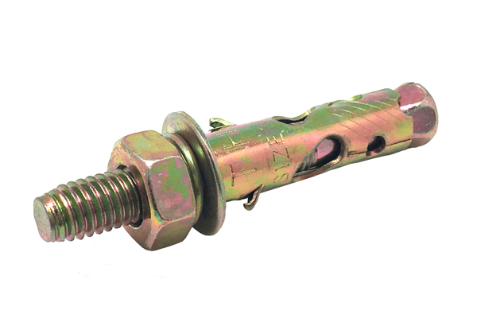

 พุกเหล็ก คือ พุกที่ใช้สำหรับเจาะผนังคอนกรีต
แต่ใช้ได้กับงานภายในอาคารเท่านั้น เนื่องจากผลิตจากเหล็ก อาจทำให้เกิดสนิมได้หากนำไปใช้งานภายนอก และยังเหมาะกับงานที่ต้องรับน้ำหนักเป็นจำนวนมากเป็นพิเศษ เช่น
งานแขวนโคมไฟแชนเดอเลียร์ มีให้เลือกหลายเบอร์ตามความต้องการใช้งาน
คุณสมบัติ
ข้อแนะนำในการใช้
ข้อควรระวัง
คุณสมบัติ
-ผลิตจากเหล็กคุณภาพสูง ทนทานต่อแรงกระแทก และแรงดันของโครงสร้างได้เป็นอย่างดี
-เหมาะสำหรับการติดตั้งงานที่ต้องรับน้ำหนักมากเป็นพิเศษ โดยช่างทั่วไป หรือชั่งมืออาชีพ
-น้ำหนักเบา ขนาดกะทัดรัด สะดวกต่อการใช้งาน และการจัดเก็บ
-สามารถใช้ร่วมกับน็อต หรือสกรูเพื่อให้ยึดติดกับอุปกรณ์ได้แน่นมากยิ่งขึ้น
-ผ่านกระบวนการผลิตที่ได้มาตรฐานโรงงาน ใช้งานได้อย่างมั่นใจ
Back to top
ข้อแนะนำในการใช้
พุกหล็กใช้ยืดกับผนังปูน เมื่อต้องการใช้ดสิ่งของที่มีน้ำหนักมาก หรือเป็นอะไรที่เสียงต่อการเป็นอันตรายของผู้อื่น
ปกติพุกขนาด 3/8 ก็ใช้ดอกสว่านเจา:ปูน 3/8 นิ้(3 หน) เช่นกัน รูเจาะจะมีขนาดใหญ่ว่าตัวพุกหล็กเล็กน้อย ถ้าเจาะในแนวระดับก็สามารถสอดเข้าไปได้ทันที แต่ถ้า
เจาะในแนวฉากเช่นเพดาน สอดเข้าไปตรงๆ จะหล่นลงมา ที่อยากแนะนำ มักใช้ซิลิโคนอัดเข้าไปในรู หลังจากใช้ตัวเป่าๆ ผงปูนที่เหลือในรูเจาะออกให้หมดแล้ว ฉีด
อัดเข้าไป แล้วอัดด้วยพุกหล็กเข้าไปในรูอีกครั้ง ตอนนี้ พุกหล็กจะติดอยู่กับผนังไม่ว่าในแนระนาบหรือแนวดิ่งได้สบายๆ หลังจากนั้น ถ้าพุกเป็นแบบน๊อตเกลียว ก็
ใช้น็อดขันยืดสิ่งของเข้ไปกับพุกได้เลย ควรใส่แหวนโลหะด้วยจะดีมาก ถ้าเป็นพุกแบบน๊อดเยวปล่อย ก็ทำแบบเดียวกันคือหมุนเกลียวยึดกับสิ่งของเข้าไปในรูพุก
หมุนเข้าไปเรื่อยๆ จนพุกถ่างตัวอกภายในรูเจาะ หมุนเข้าไปจนแน่น พุกก็จะขยายตัวจนชนยึดติดกับผนังเอง รออย่ไปหมุนเล่นหรือรบกวนพุกมากนัก ปล่อยให้กาวซิ
ลิโคนแห้ง ก็เป็นอันเสร็จสมบูรณ์
Back to top
ข้อควรระวัง
-ห้ามดัดแปลง แก้ไขสินค้า หรือนำไปใช้งานผิดประเภท
-ห้ามใช้สารเคมีที่มีฤทธิ์เป็นกรด และด่างทำความสะอาด
-จัดเก็บในที่แห้ง และพ้นมือเด็ก
-ห้ามจัดเก็บใกล้ความร้อน และเปลวไฟ
-ห้ามใช้งานร่วมกับอุปกรณ์ที่ไม่ได้มาตรฐาน
Back to top
แหล่งที่มา : https://www.homepro.co.th/p/1184589
แหล่งที่มา : https://www.jorakay.co.th/blog/owner/wall/what-is-expansion-anchor
แหล่งที่มา : http://www.srimuang.co.th/category/3/%E0%B8%9E%E0%B8%B8%E0%B9%8A%E0%B8%81
-anchor-bolt/%E0%B8%9E%E0%B8%B8%E0%B9%8A%E0%B8%81%E0%B9%80%E0%B8%AB%E0%B8%A5%E0%B9%87%E0%B8%81-sleeve-anchor-bolt-expansion-bolt